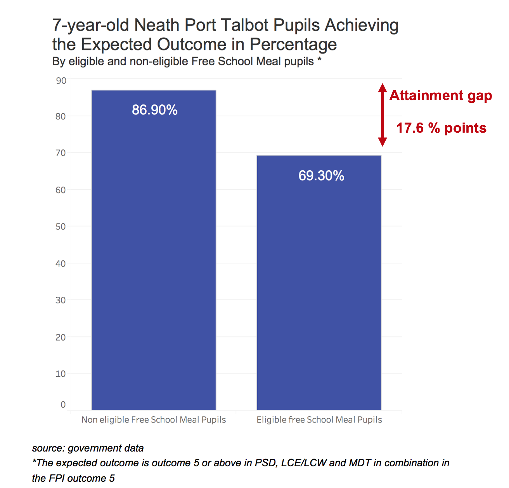
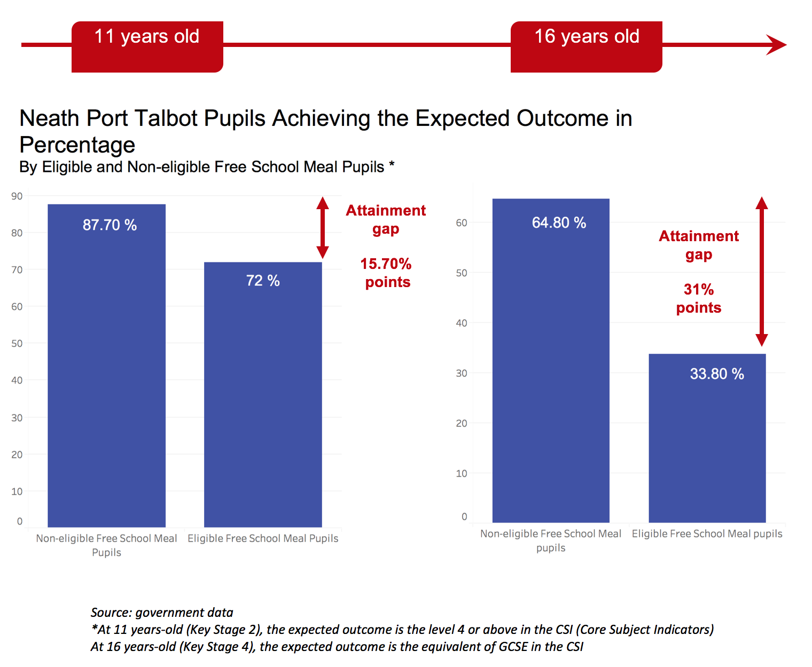
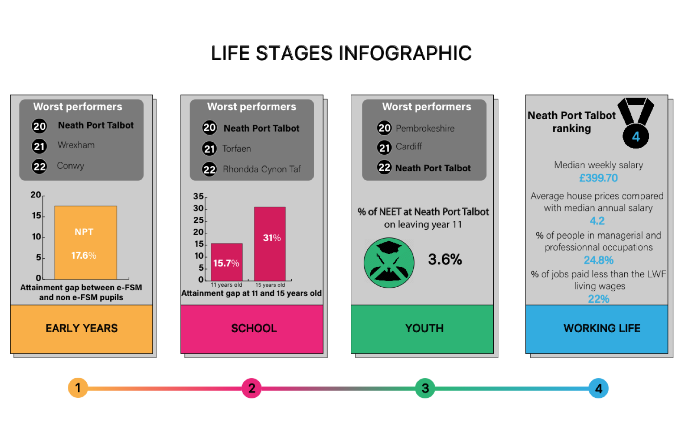

Neath Port Talbot is the worst place to live in Wales if you want to climb the social ladder, according to the State of the Nation 2017 report released in November by the Social Mobility Commission.
Despite several policies already implemented to tackle this issue, the Welsh Cabinet Secretary admitted they “need to do more” during a parliament debate in December.
Is Neath Port Talbot’s educational system failing?
The ranking is based on the Social Mobility Index (SMI) measuring social mobility during 4 life stages: early years, school, youth and working life.
Neath Port Talbot scores are worst during childhood, the first three stages. The fact that this local authority is consistently at the bottom of the ranking highlights a failure of their education system for disadvantaged children.
During the early years (between 3 and 7 years old), teachers assess their Welsh pupils’ progress. General academic standards are set nationally, allowing a comparison between disadvantaged and non-disadvantaged children’s outcomes. Pupils are considered disadvantaged when they are eligible for Free School Meal (FSM).
In Wales 75.9 percent of the pupils eligible for FSM have achieved the expected outcome. In NPT the rate is 69.3 percent.
A 17.6 percent points attainment gap separates disadvantaged pupils from their peers. NPT is the third lowest-performing local authority.
The inequalities remain high during school: NPT stay at the bottom of the ranking.
During the school stage Welsh pupils are assessed at 11 and 16 years old. Again, pupils not eligible for FSM are outperforming their peers on FSM. At 11 years old, there is a 15 percent points attainment gap; at 16 years old it doubles.
But the council’s worst performance is during the youth stage of life. Last of the ranking, NPT has the biggest percentage of NEET with 3.6 percent in 2017. NEET stands for young people between 19 and 24 years old Not in Education, Employment or Training.
What policies address social mobility issues?
The council implemented national and regional strategies to fight childhood poverty and educational issues.
The Child Poverty Strategy 2015 designed by the Welsh Government aims to reduce inequalities in education among other objectives.
Their most recent progress report highlights their achievements like the decrease of the attainment gap between disadvantaged and other seven-year-old children. The attainment gap fell nationally from 18.3 percent in 2012 to 14.9 percent in 2015. In NPT it is 17.6 percent.
Contacted by email, the NPT council did not give an explanation on their social mobility issues. Instead they provided the regional strategy they are following which is called the Education through Regional Working (EWR). It encompasses six councils: Powys, Ceredigion, Pembrokeshire, Carmarthenshire, Swansea and NPT.
They also reported progress from 2015 to 2017. One of their success criteria was the decrease of youths not in education, employment or training in these councils to 3.3 percent. However, the overall NPT number of NEET youths remains higher.
AM Dai Lloyd asked the Welsh Government to provide an additional support package to the county in December because he was concerned about NPT NEET issue.
The Plaid AM also added that “much of the poverty and generational unemployment within some of our communities stem from a total lack of interest from successive British Governments in addressing the situation”.
A few days after the release of the State of Nation 2017 report, the 4 members of the board of the government’s Social Mobility Commission who commissioned this report have resigned in protest at the lack of progress towards a “fairer Britain”.
